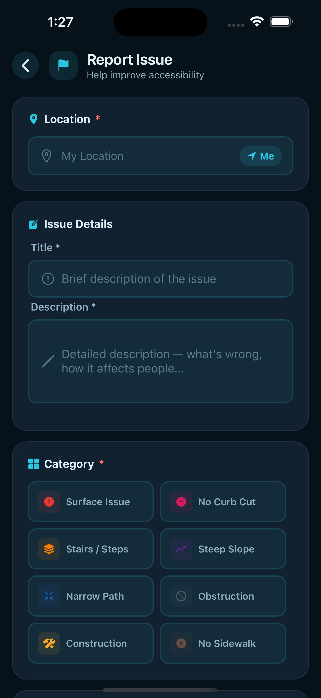

| lat | lng | type |
|---|---|---|
| 34.0521 | -118.2437 | stairs |
| 34.0524 | -118.2440 | curb |
| 34.0526 | -118.2443 | slope |
| 34.0528 | -118.2446 | constr. |
| 34.0531 | -118.2451 | narrow |
| 34.0533 | -118.2454 | obstr. |
| 34.0535 | -118.2457 | stairs |
| 34.0537 | -118.2461 | curb |
Beta launch with the disability community.
Indoor mapping (museums, malls).
A world Liv can navigate without thinking about it.
Scan to try AbiliMap